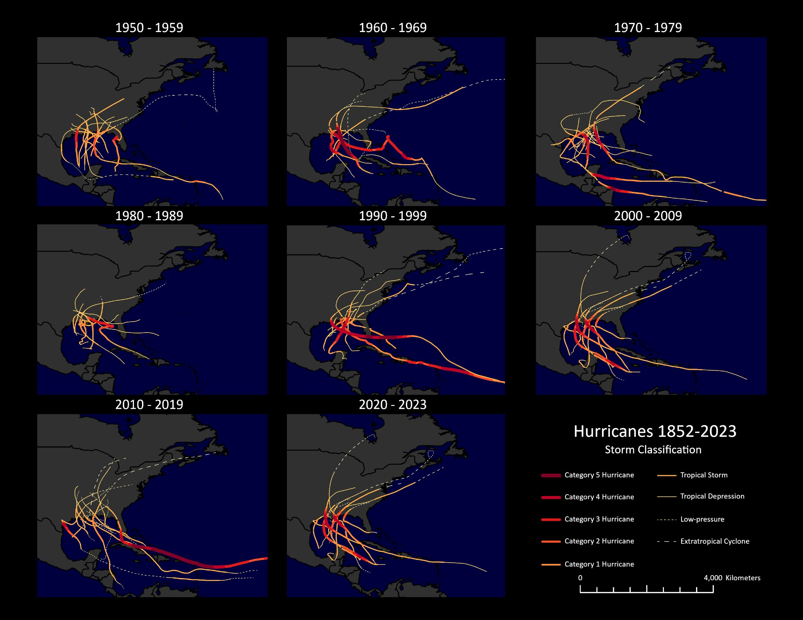

Problem
Hurricane tracks change in both space and time, which makes them hard to show on a single static map. The goal was to visualize Atlantic hurricane paths and intensity from 1950 to 2023 in a way that lets readers compare decades at a glance, and to animate an individual storm's track over time.
My role
Sole author; designed the symbology, layout, and animation in ArcGIS Pro.
Data & method
Data:
Hurricanes_1852_2023— Atlantic storm track segments with storm classification over time
Method (ArcGIS Pro):
- Wrote an Arcade expression to classify each track segment into nine classes, from Category 5 hurricane down to tropical depression, low-pressure, and extratropical cyclone.
- Symbolized the classes with unique values on a sequential dark-red-to-yellow color scheme, with line width scaled to intensity so the strongest segments stand out.
- Used dashed lines to separate non-tropical systems: short dashes for low-pressure and long dashes for extratropical cyclones.
- Built a small-multiples layout with one map frame per decade (1950–2023) sharing the same extent, symbology, and legend, so differences between panels reflect the data rather than the design.
- Enabled time on the layer and used the time slider to animate Hurricane Katrina's track.
Figures
